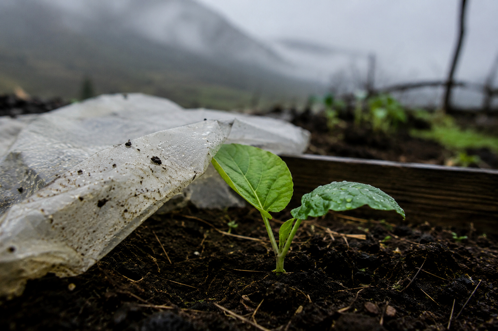

Home > Critical notes > From Quisquiza (13 of 20)
From Quisquiza (13 of 20)
Protection
Covers Against the Elements
This note is part of a series written from Quisquiza, in the high-Andean cloud forest of Colombia, where ecological restoration and research now unfold side by side. It reflects on how living and working within this terrain gradually reshapes the way I think about memory, information, and the infrastructures built to sustain them. Check all the notes in this section's index.
Up here, in Quisquiza, seedlings have enemies.
Cold, for starters, and fog. Constant fog. Rain, of course. Wind. Occasionally hail. The high-altitude sun when the clouds decide to disappear for a few hours. Slugs. Birds. Insects. Fungi. And, with embarrassing frequency, the boots of the person responsible for planting them.
(Me.)
So I cover things.
A sheet of transparent plastic stretched over a raised bed. A piece of shade cloth tied between stakes. Stones along the edges because the wind has very personal opinions about my engineering. Sometimes a broad leaf positioned over something particularly delicate. Sometimes branches, dry grass, pieces of old mesh, whatever is available and appears capable of negotiating with the weather (or my boots) for a few days.
The results can be surprisingly dramatic. Soap-opera-like.
A thin sheet of plastic changes very little from the outside. Underneath, however, the conditions shift. Wind weakens. Rain no longer strikes the soil directly. Moisture remains longer. During the day, the air and soil may become slightly warmer. A seedling that was spending most of its energy surviving exposure suddenly has enough margin to continue growing.
Nothing fundamental about the mountain has changed. The cold is still there. The rain is still coming sideways, just because. The sun has not signed any agreements.
I have simply altered the conditions immediately surrounding one very small plant. And that can be enough.
Protection works partly by creating difference. The environment beneath the cover does not have to become ideal. It only has to become tolerable enough for something vulnerable to establish itself.
And establishment matters.
A newly germinated plant has very little stored energy, almost no root system, hardly any physical structure, no faith in the future, and no capacity to move somewhere more convenient when the weather turns ugly. A mature plant may withstand conditions that kill it at an earlier stage. The same organism, in the same place, can therefore require very different conditions at different moments of its life.
Which means I have learned to distrust sentences beginning with "this plant grows perfectly well here."
Yes. Eventually. Maybe. Once it has survived being tiny.
That distinction has become rather important in my garden. I have lost seedlings because I exposed them too early. I have also damaged plants by protecting them too enthusiastically. A plastic cover that keeps out cold can also trap too much heat when the sun appears. Condensation accumulates. Air circulation decreases. Soil remains wetter than expected. Fungi discover the arrangement and immediately interpret it as an invitation to an orgy.
Protection produces its own environment, and that environment has to be watched. So the cover goes on. Then it opens. Then it closes again because the temperature drops. Then the wind tears one corner loose. Then I put another stone on it. Then the sun comes out and I discover that I have accidentally constructed a small botanical sauna.
(Fieldwork is very dignified. Also, tiresome as fuck.)
Eventually, if everything goes reasonably well, the cover becomes less necessary. The roots reach farther. The stem thickens. New leaves appear. The plant begins regulating its own water and temperature more effectively. What would have damaged it three weeks earlier becomes ordinary exposure.
That moment is easy to miss. Protection can become habitual. Once a cover has saved something, leaving it in place feels prudent. Why remove the structure that worked?
Because the conditions that justified it may no longer exist. And because shelter changes growth.
A plant permanently protected from wind does not experience the same mechanical stress as one exposed gradually to it. A cover that excludes heavy rain may also reduce ordinary rainfall. Shade that prevents scorching can become insufficient light. A structure built around vulnerability can eventually begin preserving the conditions of vulnerability itself.
That is where things become interesting.
Knowledge and memory work has many equivalents of these little covers.
Pilot programmes. Special grants. Temporary project teams. Protected research spaces. Experimental cataloguing environments. Dedicated funding for neglected collections. Separate repositories established because existing institutions cannot yet accommodate particular materials or practices. Fellowships that give someone enough time to develop work that would otherwise disappear beneath ordinary workloads.
These arrangements alter the local conditions. A new practice that would be crushed by the normal demands of an institution receives time. A small archive receives money before it can generate measurable outputs. A local vocabulary is allowed to develop without immediately being forced into an established classification. A community project works at a scale where relationships can form before somebody asks when it will be expanded to seventeen countries.
A little margin appears. And sometimes that margin is what makes establishment possible.
The mistake comes when we assume that because protection was necessary at the beginning, the protective arrangement itself should define the future.
Pilot projects become permanent exceptions. Experimental programmes remain forever peripheral. One person continues protecting a practice that the institution never learns to support. A grant keeps an archive alive for three years without changing the conditions that endangered it in the first place. A community initiative is given its own little institutional greenhouse, admired through the glass, photographed for annual reports, and carefully prevented from altering anything outside it.
Protected, certainly. Integrated into the life of the institution? That is another question.
There is also a more uncomfortable version of protection.
Institutions sometimes protect things by controlling them. They restrict access "for preservation." They isolate collections "for safety." They make decisions on behalf of communities "to avoid risk." They create special procedures that begin as safeguards and gradually become systems through which authority remains concentrated somewhere else.
The language remains benevolent. The structure may not be.
That does not mean every barrier should disappear. Some forms of protection are meant to last. Sensitive knowledge may require permanent access restrictions. Fragile materials may always need controlled environments. Communities may decide that some information should never circulate freely. Privacy, sovereignty, conservation and cultural responsibility cannot be reduced to temporary inconveniences waiting for openness to arrive.
So duration alone tells us very little. The better question is what the protection makes possible. Does it allow something to establish itself? Does it increase the capacity of the people involved to decide what happens next? Can the protected practice eventually operate without the extraordinary support that first sustained it? If the protection remains, does it remain because those who depend on it still want and need it? Or because the institution has become comfortable keeping them underneath the plastic?
Those questions are harder than simply deciding when to remove a cover.
Fortunately, seedlings offer no strategic plans. They give other signs. New leaves. Stronger stems. Roots appearing at the edge of the bed. Growth slowing because the cover has become too hot. A plant beginning to press against the structure that once kept it alive.
Then I start opening the sides. A little air today. More sun tomorrow. One night uncovered. Then perhaps the cover stays folded beside the bed, available in case the frost returns. Protection does not have to disappear in order for growth to continue. Sometimes it changes form. What begins as enclosure becomes backup. What begins as intensive support becomes something lighter, farther away, called upon only when conditions demand it.
The important thing is that the structure responds to the life underneath it. Not the other way around.
This morning I lifted one of the plastic sheets after the sun reached the garden. Several seedlings underneath were standing considerably taller than the miserable little things I had covered a few weeks earlier.
The wind moved through them. They bent. Then they stayed upright again. So I left the cover open.